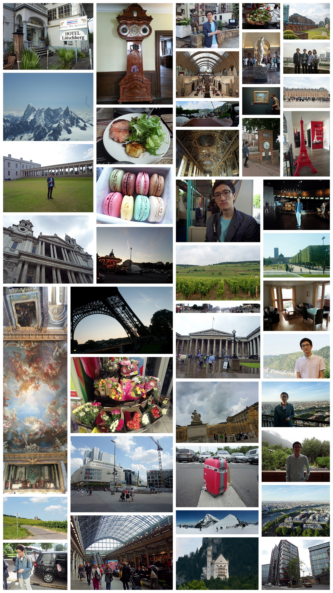

Traveling Europe
지난 2013년 여름 주요하게 한 일이라면 가족과 함께 유럽여행을 다녀온 것이다. 영국 런던을 시작으로 프랑스 파리, 스위스, 독일 프랑크푸르트까지 이동했다. 런던에서는 대중교통을 이용하고 걸어 다니면서 관광을 했고, 파리에서부터는 렌터카를 빌려 열심히 달렸다. 12박 14일의 유럽여행 치고는 그리 길지 않은 여정이었지만, 차 덕분인지 가봐야 할 곳들은 빠짐없이 다녀온 듯싶다.
이번 여행에 스마트폰이 없었다면 훨씬 어렵고 힘든 여행이 되었을 것이다. 차와 핸드폰에 탑재된 유럽 전역에서 사용 가능한 길안내 기능은 물론이고, 달리는 차에서 당일 숙박할 곳을 예약하고, GPS 로그로 그날 이동경로를 저장하고 사진들의 위치를 찍어두는 등 여행 전 과정을 이런저런 기술들이 지배했던 것 같다. 길을 잃는 등의 낭만(?)은 덕분에 없었다.
<여행 첫날 런던에서의 계획한 이동 경로(좌)와 실제 이동경로(우)>
어찌되었든 새로운 문화를 접하고, 다양한 음식을 먹고(입에 맞았던 현지음식은 손에 꼽겠지만), 사람들을 만났던 이번 여행은 오랫동안 대화 주제가 되어줄 것이다. 실내에서는 당연히 금연이지만 야외에서는 자유롭게 흡연하고 거리를 담배 밭으로 만든다든지, 덩치가 산만한 강아지(혹은 개)들이 호텔, 음식점을 자유롭게 드나드는 일―예절 교육이 법으로 정해져 있다고 들었다―들을 보면서 우리나라가 빨리 보고 배웠으면 하는 문화들이 많았다.
음식 문화에 관해서라면, 와인 이외의 술은 입에 대지 않는 개인적 입장에서 우리나라의 술 문화가 조금 개방되었으면 하는 마음도 있다. 하지만 그 이외에는 물도 공짜고 초밥 음식점에서 주는 미소 된장국이나 녹차도 공짜인 우리나라가, 음식점들에서 대화의 볼륨을 절제하지 않는 것을 제외하면 여러모로 우월한 것 같다. 덧붙여 스파게티는 학교 식당이 제일 맛있는 게 확실하다. 아무리 잘나가는 유럽 레스토랑도 학식의 봉골레 오일 파스타 맛은 따라오지 못하리라 확신한다.
Photos
사진들은 지금까지도 계속해서 저로 하여금 언제라도 다시 떠날 수 있도록 힘을 불어넣어 줍니다.
